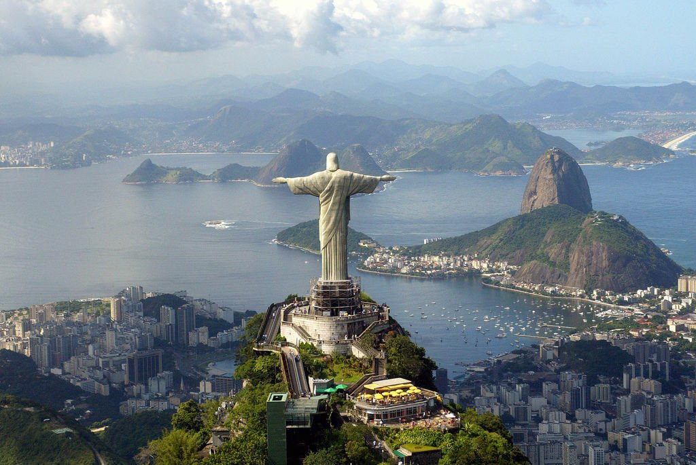
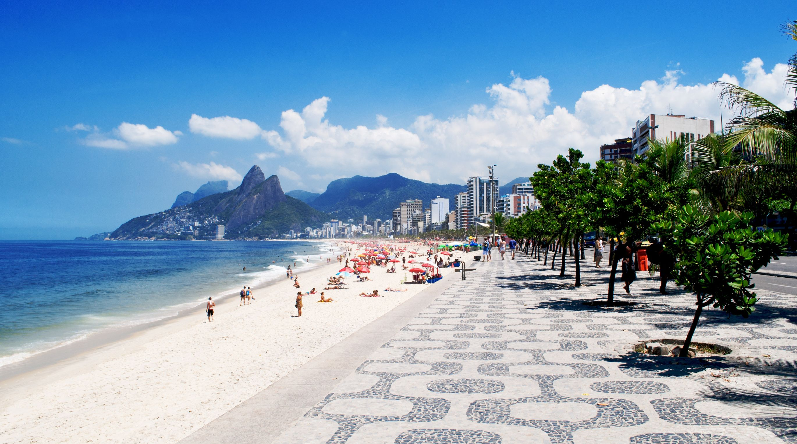
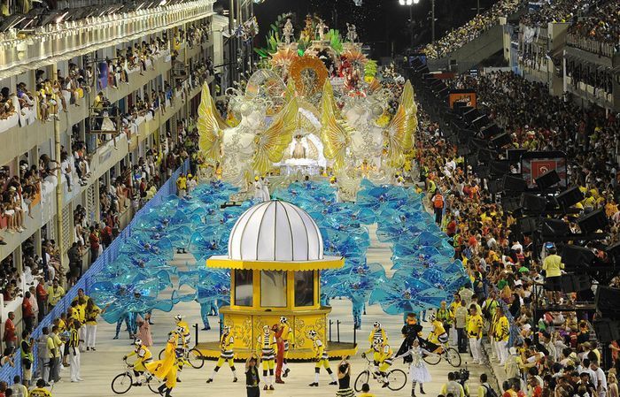
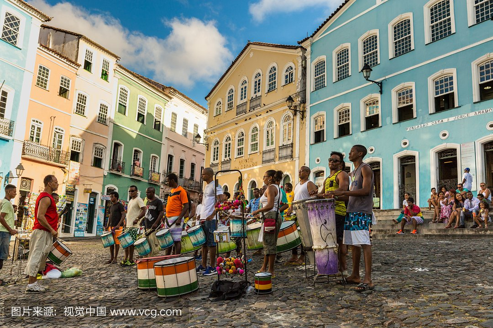
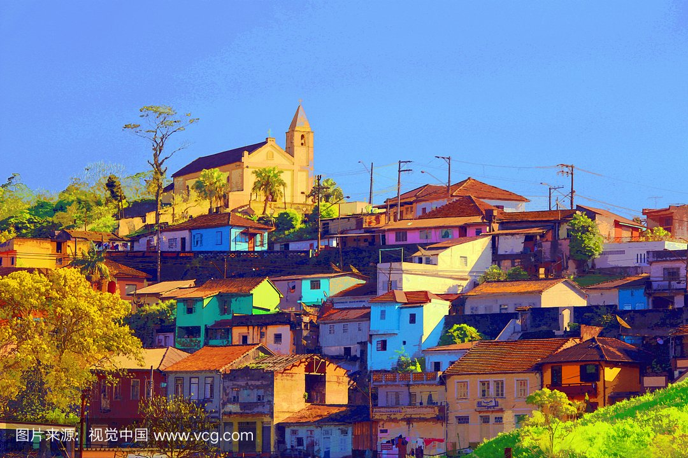
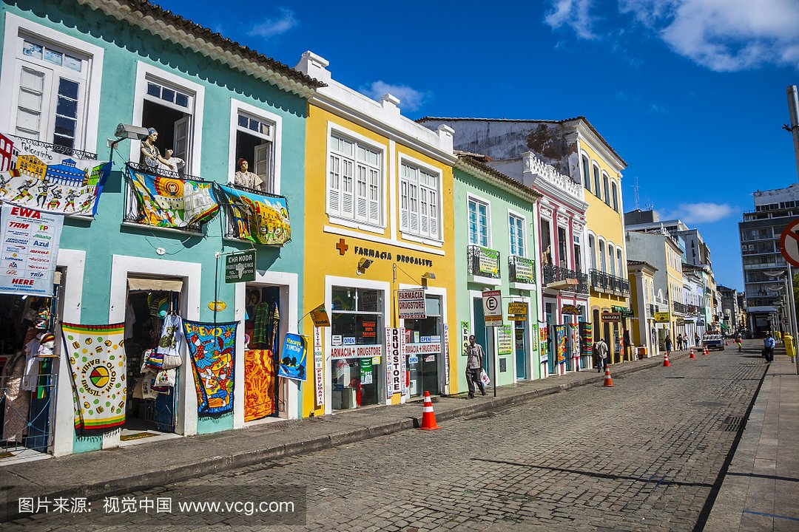
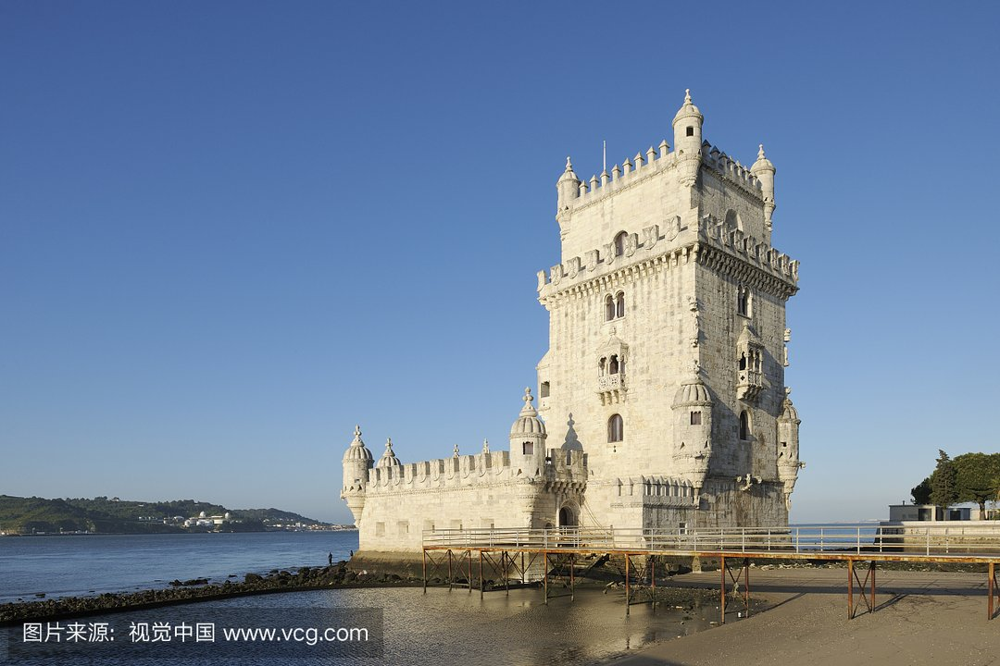

morly旅游网
一说巴西，你肯定想到了足球，内马尔，想过去美丽的巴西吗？
巴西共分为26个州和1个联邦区（巴西利亚联邦区），州下设市。历史上巴西曾为葡萄牙的殖民地，1822年9月7日宣布独立。巴西的官方语言为葡萄牙语。国名源于巴西红木。
巴西拥有丰富的自然资源和完整的工业基础，国内生产总值位居南美洲第一，为世界第七大经济体。是金砖国家之一，也是南美洲国家联盟成员。是里约集团创始国之一，南方共同市场、20国集团成员国，不结盟运动观察员。全球发展最快的国家之一，是重要的发展中国家之一。
巴西的文化具有多重民族的特性，巴西作为一个民族大融炉，有来自欧洲、非洲、亚洲等地区的移民。足球是巴西人文化生活的主流运动，是2014年世界杯举办国。
巴西利亚
巴西首都，地处巴西高原中部，气候分为干湿两季，湿季从9月至第二年4月，干季从每年5月至8月。干湿两季分别明显，昼夜温差也较大，年平均气温19度。人口245.5万（2010年）。巴西利亚是上世纪50年代末在巴西内地戈亚斯州境内海拔1200多米的高原上兴建的，是世界上海拔最高的首都之一。1960年4月21日，首都正式由旧都里约热内卢迁移至此。
 亚马孙河
位于南美洲北部，是世界上流量、流域最大、支流最多的河流。由于河流长度测量方法并无定论，亚马逊河河长便有着多种不同的说法，其中之一即为常见的6400公里。
 阿马帕
巴西北部一个州。东临大西洋，北与苏里南、法属圭亚那交界。面积14万平方公里。人615,715(2006)。首府马卡帕。除西北山地外，大部分为冲积平原和沼泽地。赤道横贯，气候终年高温多雨，年降水量2，000毫米以上，热带雨林密布。
 圣埃斯皮里图
圣埃斯皮里图州(Espírito Santo)位于巴西东南部，是巴西二十六个州之一，首府维多利亚。当地分为高原地区和靠近海岸线的低洼地区。该州的主要河流是Doce，Doce河谷旁是巴西最重要的湖区，该湖区包括了26个湖泊，最大的湖泊名为茹帕拉南湖。
巴西联邦共和国（英语：TheFederativeRepublicofBrazil；葡萄牙语：RepúblicaFederativadoBrasil）简称巴西。
巴西一词出自繁衍于巴西海岸的巴西红木（英语：Brazilwood），巴西红木在葡萄牙语中称为“葡萄牙语：pau-brasil”，其中brasil意为像炭火一样红，由拉丁语brasa（“炭火”的意思）与后缀-il（来自-iculum或-ilium）构成。巴西红木所产生的深红色染料，引起了欧洲服装业的重视，并引起了巴西早期的商业性开发。16世纪期间，当地原住民采伐大量的巴西红木，由欧洲商人（多数来自葡萄牙，也有一部分来自法国）销往欧洲。
内容整理至网络，如有侵权，请联系我们！1255394075@qq.com